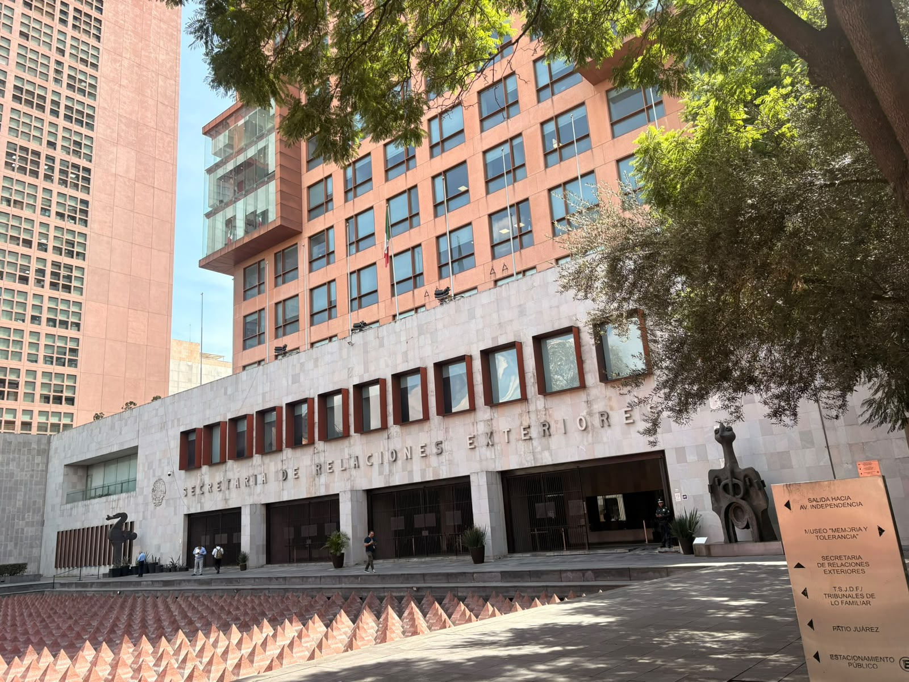

⚖Derecho
Derecho Internacional · Derechos Humanos · Derecho Penal Internacional · Derecho Corporativo
Portafolio · 2026
Derecho · Relaciones Internacionales · Geopolítica · Diplomacia · Política
Mi interés profesional se encuentra particularmente vinculado con el Derecho Internacional, la política exterior, los organismos internacionales y el análisis de los fenómenos políticos que trascienden las fronteras.
Perfil
Soy egresada de la Licenciatura en Derecho. Mi formación jurídica despertó en mí un profundo interés por las relaciones internacionales, la geopolítica, el Derecho Internacional, los derechos humanos y la diplomacia.
A lo largo de mi formación profesional he buscado complementar el conocimiento jurídico con experiencias en instituciones públicas, espacios legislativos, organizaciones juveniles, actividades diplomáticas y proyectos de investigación y divulgación.
Considero que conocer las instituciones desde dentro, participar en espacios de diálogo y acercarme a diferentes perspectivas políticas e internacionales es parte fundamental de la construcción de mi trayectoria profesional.
“No basta con mirar cómo se mueve el mundo; también hay que comprender qué decisiones lo transforman.”
Derecho Internacional · Derechos Humanos · Derecho Penal Internacional · Derecho Corporativo
Geopolítica · Política Exterior · Diplomacia · Organismos Internacionales
Participación Juvenil · Asuntos Legislativos · Políticas Públicas · Vinculación Institucional
Escritura · Investigación · Divulgación Jurídica · Comunicación Política
Derecho y sector público
Servicio social · Consultoría Jurídica
He participado en actividades vinculadas con tribunales y organizaciones internacionales, con especial acercamiento a temas relacionados con la Corte Penal Internacional.
Investigación jurídica, revisión de sentencias y decisiones, consulta de estándares internacionales y análisis de instrumentos jurídicos relacionados con asuntos de carácter internacional. Esta experiencia representa uno de los principales vínculos entre mi formación como jurista y mi interés por las relaciones internacionales y la diplomacia.

Apoyo jurídico · Asistente honoraria
Experiencia práctica dentro del ámbito de procuración de justicia.
Análisis jurídico, elaboración de tarjetas informativas, revisión de información relacionada con personas detenidas, análisis de datos probatorios, apoyo en determinaciones ministeriales y seguimiento de actuaciones procesales. Esta experiencia me ha permitido fortalecer mis capacidades de análisis, investigación, redacción jurídica y comprensión del funcionamiento de las instituciones públicas.
FAISA · ABogatitos · Escencia
Secretaría de Asuntos Jurídicos · Dirección de Cumplimiento Institucional
Formo parte de un espacio enfocado en la formación y participación juvenil, con acercamiento a actividades relacionadas con asuntos jurídicos, cumplimiento institucional, vinculación y participación política.
@faisa_mxProyecto editorial jurídico · Divulgación del Derecho
Me interesa especialmente la investigación, comunicación, creación de contenido, redes sociales, verificación de información y desarrollo editorial. La escritura representa para mí una herramienta para comunicar temas jurídicos, políticos e internacionales de una manera accesible.
@abogatitxsCargo pendiente
Aquí necesito que me describas qué es lo que haces.
@im_escenciaPolítica, juventud y diplomacia
He buscado participar activamente en espacios de formación, diálogo y participación juvenil relacionados con asuntos políticos, legislativos e institucionales.
Actividades y encuentros de organizaciones juveniles; acercamiento a espacios de trabajo legislativo y a la dinámica institucional de la Cámara.
Actividades y encuentros vinculados con formación, participación juvenil y asuntos de carácter legislativo.
Actividades de carácter político y juvenil, fortaleciendo mi experiencia en espacios de diálogo, formación y vinculación política.
Actividades de acercamiento académico y cultural a la representación diplomática, fortaleciendo mi interés por las relaciones bilaterales y la realidad internacional.
Visita y actividad de acercamiento diplomático, con interés particular en conocer la perspectiva de Indonesia.
Para mí, participar en estos espacios representa una oportunidad para comprender cómo las ideas pueden transformarse en propuestas y cómo la participación ciudadana puede incidir en los asuntos públicos.
Formación e investigación
Estudio de la institución, el Estatuto de Roma y diferentes aspectos relacionados con el Derecho Penal Internacional.
Análisis de normas y mecanismos de protección aplicables en situaciones de conflicto armado.
Estudio de la Convención de La Haya de 1954 y su Segundo Protocolo de 1999.
Análisis del Acuerdo BBNJ y la protección y utilización sostenible de la biodiversidad marina en zonas fuera de la jurisdicción nacional.
Estudio de los derechos económicos, sociales, culturales y ambientales y del principio de interdependencia.
Investigación sobre biodiversidad, áreas naturales protegidas e impacto ambiental.
Mi proyección
Quiero construir una trayectoria profesional en la intersección entre el Derecho, las relaciones internacionales y la política.
Mi objetivo es continuar desarrollándome en espacios vinculados con la diplomacia, la política exterior, el Derecho Internacional y los organismos internacionales, combinando mi formación jurídica con una visión política e internacional.
Contacto
Si quieres conocer más de mi trabajo o colaborar en algún proyecto, escríbeme por WhatsApp o búscame en mis redes.